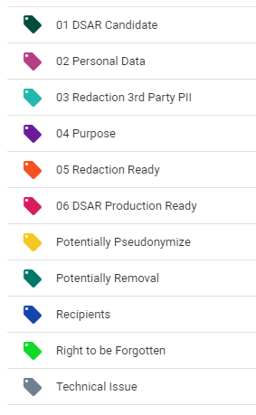

While searching the documents, it is important to remember to assign the appropriate tag to the document. For instance, if the document viewed contains personal data that must be removed, the Potentially Pseudonymize or Potentially Removal tags can be applied. Tagging the documents helps ensure correct categorization of the data. ZyLAB ONE makes the tagging of documents simple and clear.
For handling an erasure request, it is essential to search through a lot of data and filter the relevant documents. The tag functionality helps the user to sort documents based on their relevance.
Tags can be used to determine whether there are any special category personal data in the documents. If that is the case, the processing of such data must be justified. The purposes of processing can also be determined and specified using tags. This is essential, because some documents cannot be removed due to the purpose of processing. If that is the case, the user can indicate the purpose of processing and thereby clarify why certain personal data cannot be removed. This applies, for instance, when certain personal data is must be kept and processed to carry out a legal obligation. In addition, tags can be used to indicate when a document needs to be redacted and when the redaction is ready.
ZyLAB ONE offers various standard tags to be used for handling access requests. Not all these tags need to be used for erasure requests, since the documents are not meant to be sent to the requester. Users can always add potential tags or adjust the existing tags. The following tags are offered by ZyLAB ONE:

The Right to be Forgotten tag, 04 Purpose, 05 Redaction Ready, Potentially Pseudonymize, Potentially Removal, Recipients and Technical Issue tags are recommended for handling erasure requests.
As previously mentioned, often the right to be forgotten is invoked after the right of access (DSAR) is invoked. If you receive such a request after handling a DSAR for the data subject, but have used ZyLAB ONE for the DSAR process, then you don’t have to go through the whole process again and search through all the data again. You can review the documents tagged with the 01 DSAR Candidate tag again and tag them appropriately.
If that is not the case, you can start by tagging the relevant documents with the Right to be Forgotten tag and review the tagged documents once all relevant documents are tagged.
In this step it is essential to indicate the purpose of processing. This can be done by using the Purpose tag. This will ensure that only documents that are no longer necessary, are erased.
At the end of the review process, the documents will mainly be divided in two groups. Either they have the Removal tag, which means they will be removed by the IT department, or they have a Purpose tag, which indicates the ground for which they may keep processing the personal data.
Refer to the DSAR Use Case for the complete tagging process—DSAR - Tag